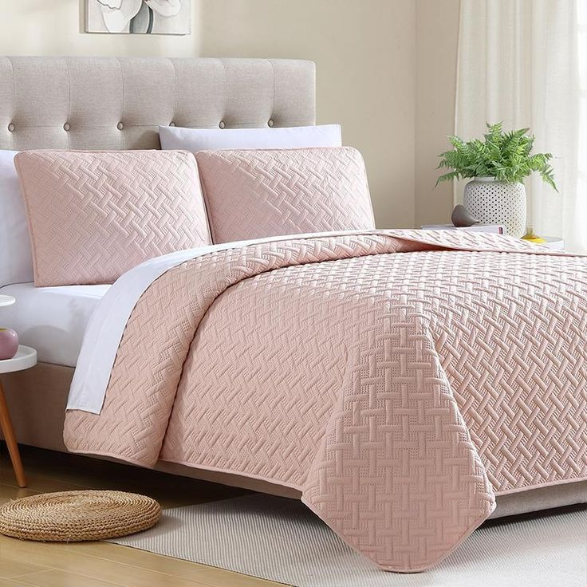

|  | CamaConfort es una empresa líder en el sector textil, establecida en 1995 y con sede en Quito - Ecuador, dedicada a la producción y venta de productos textiles diseñados para elevar tu experiencia de descanso. Nos enorgullece ser pioneros en la industria del descanso y destacamos por nuestra dedicación a la calidad y la innovación. Desde nuestra fundación, nos hemos comprometido con la excelencia, convirtiéndonos en la primera empresa en [tu país o región] en obtener la certificación en Sistemas de Gestión de Calidad. Además, contamos con la prestigiosa licencia [nombre de la licencia], asegurando que nuestros productos cumplan con los estándares más altos de calidad. En CamaConfort, seleccionamos cuidadosamente nuestras materias primas de proveedores calificados para garantizar la superioridad de nuestros productos. Nuestra línea de productos incluye una variedad de opciones, desde sábanas hasta cobertores y fundas de almohada, con un énfasis especial en la comodidad y la durabilidad. Nuestros productos se distinguen por su calidad incomparable, utilizando materiales como [menciona los materiales específicos que utilizas, por ejemplo, algodón de alta calidad]. Ofrecemos una amplia gama de opciones, desde telas 100% algodón hasta mezclas de polyester/algodón, todas tinturadas en una paleta de más de 200 colores vibrantes y duraderos. Utilizamos tintes de la más alta calidad para garantizar la satisfacción de los clientes más exigentes. En CamaConfort, nos esforzamos por superar las expectativas de nuestros clientes al ofrecer flexibilidad, calidad y precios que la competencia no puede igualar. Descubre el confort excepcional con cada producto que lleva el sello de CamaConfort, donde la calidad y la elegancia se encuentran en cada hilo. |
-- Filosofía --
Misión |
Visión |
|
Transformar la experiencia de descanso de nuestros clientes proporcionando productos textiles de alta calidad que fusionen comodidad y estilo. Nos comprometemos a innovar continuamente en diseño y tecnología, ofreciendo soluciones que promuevan un descanso reparador y la creación de entornos acogedores en cada hogar. Guiados por la excelencia y la sostenibilidad, aspiramos a ser líderes en la industria textil, superando las expectativas de nuestros clientes y contribuyendo al bienestar de la comunidad. |
Ser reconocidos como la marca preferida en productos textiles para el descanso, distinguiéndonos por la calidad inigualable, la innovación en diseño y el compromiso con la satisfacción del cliente. Buscamos expandir nuestra presencia a nivel nacional e internacional, estableciendo estándares de excelencia en la industria. A través de prácticas comerciales éticas y sostenibles, aspiramos a ser un referente en responsabilidad social corporativa, contribuyendo al bienestar de las comunidades en las que operamos. En CamaConfort, cada hilo cuenta una historia de confort, calidad y compromiso con el bienestar de nuestros clientes. |